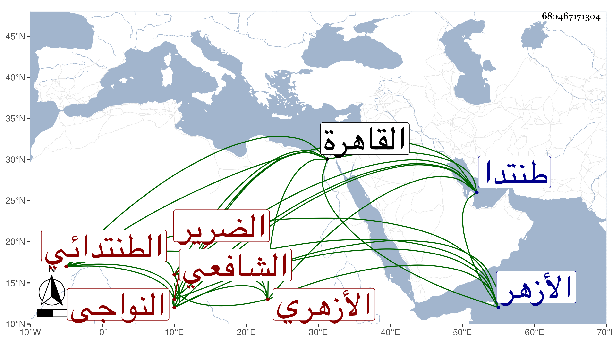

0902Sakhawi.DawLamic.ITO20230111-ara1.EIS1600.680467171304
Biography ID: 680467171304
740
محمد بن عيسى بن إبرهيم الشمس النواجي الطنتدائي ثم الأزهري الشافعي الضرير . مات في ليلة الجمعة سادس عشر ذي القعدة سنة تسع وسبعين بعد تعلله أشهرا بذات الجنب وغيره وصلي عليه من الغد قبل صلاة الجمعة في مشهد حافل وشيعه خلق وأظنه جاز الأربعين بيسير وحصل التأسف على فقده . وكان مولده ببزوك ونشأ بنواج ثم تحول منها قريب البلوغ إلى طنتدا فقرأ بها القرآن بالمقام ثم تحول إلى القاهرة فقطن الأزهر وحفظ كتبا الشاطبية والمنهاج وجمع الجوامع وألفية النحو والتلخيص والجمل وغيرها وجد في الاشتغال فأخذ النحو عن السراج الوروري وأحمد بن يونس المغربي ونظام الحنفي وداود المالكي في آخرين والفقه والمنطق وأصول الدين عن الشرف موسى البرمكيني وكذا من شيوخه المناوي والعبادي والتقى الحصني والشرواني والكافياجي وبعضهم في الأخذ عنه أكثر من بعض وأخذ القراآت عن الزين عبد الغني الهيثمي واليسير عن جعفر السنهوري واشتدت عنايته بملازمة زكريا حتى عرف به ومهر في فنون وفاق كثيرا من شيوخه وطار صيته بالفضيلة التامة والفهم الجيد وتصدى للإقراء وكثر الأخذ عنه بحيث انتفع به جماعة من رفقائه فمن فوقهم ، كل ذلك مع السكون والتواضع ومزيد العقل والصلاح والديانة ، وقد حج وجاور وأقرأ هناك وسألني عن بعض الأشياء وكنت ممن أحبه رحمه الله وعوضه الجنة .
